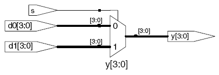
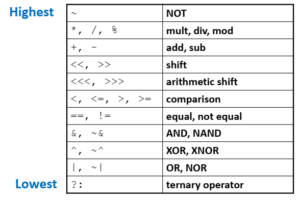
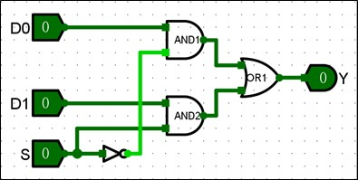

System Verilog 基础入门2
System Verilog 基础入门 2¶
system verilog 讲解视频-2:
4 语法基础补充¶
4.1 数值¶
硬件描述语言的一切都是建立在硬件逻辑之上，因此 Verilog 具有一套独特的、基于电平逻辑的数值系统。Verilog 通常使用下面四种基本数值表示电平逻辑：
- 0：表示低电平或 False；
- 1：表示高电平或 True；
- x 与 X：表示电平未知。也就是说实际情况可能为高电平，也可能为低电平，甚至二者都不属于；
- z 与 Z：表示高阻态。这种情况常常源于信号没有驱动。
System verilog 中用于给信号或变量赋值的数字格式为
N'Bvalue
数值示例
| 数值 | # 位数 | 进制 | 十进制数值 | 存储内容 |
|---|---|---|---|---|
| 3'b101 | 3 | binary | 5 | 101 |
| 'b11 | unsized | binary | 3 | 00…0011 |
| 8'b11 | 8 | binary | 3 | 00000011 |
| 8'b1010_1011 | 8 | binary | 171 | 10101011 |
| 3'd6 | 3 | decimal | 6 | 110 |
| 6'o42 | 6 | octal | 34 | 100010 |
| 8'hAB | 8 | hexadecimal | 171 | 10101011 |
| 42 | Unsized | decimal | 42 | 00…0101010 |
示例：
logic [4:0] my_vec; // 一个位宽为 5 的向量
assign my_vec = 5'b01011;
4.2 运算符¶
表达式由操作符（运算符，Operators）和操作数构成，其作用是根据操作符的意义对操作数进行运算，最终得到相应的结果。Verilog 中的运算符按照功能可以分为以下几类：算数运算符、关系运算符、逻辑运算符、归约运算符、条件运算符、移位运算符、拼接运算符。
- 位运算
~（按位非）
&（按位与）
|（按位或）
^（按位异或）
~^ 或 ^~（按位同或）
对 2 个操作数的每 bit 数据进行按位操作。如果 2 个操作数位宽不相等，则用 0 向左扩展补充较短的操作数。按位非是单目运算符，它对操作数的每 bit 数据进行取反操作。例如：
A = 4'b0101;
B = 4'b1001;
~A // 4'b1010
A & B // 4'b0001
A | B // 4'b1101
A^B // 4'b1100
- 逻辑运算符
&&（逻辑与）
||（逻辑或）
!（逻辑非）
逻辑运算符的计算结果也是一个 1bit 的值，其中 0 表示 False，1 表示 True，x 表示不确定。如果一个操作数不为 0，则在逻辑运算时它等价于逻辑 1；如果一个操作数等于 0，则它运算时等价于逻辑 0。如果它任意一位为 x 或 z，则它等价于 x。
//a = 2'b01 , b = 2'b10
a && b = 1
a || b = 1
!a = 0
- 算数运算符
算术运算符又称为二进制运算符，共五种，均为双目运算符。为：
+（加）
-（减）
*（乘）
/（除）
%（取模）
例如：a + 3'b101 表示两个数 a 和 3'b101 相加。
- 关系运算符
>（大于）
<（小于）
>=（大于等于）
<=（小于等于）
==（等于）
!=（不等）
===（全等）
!==（非全等）
关系运算符的运算结果固定为 0（False）或 1（True），是一个 1bit 的值。如果某一个操作数中有一位为 x 或 z，则前六种关系运算的结果为 x。全等比较则对为 x 或 z 的位也进行比较，只有两个操作数完全一致时，其结果才是 1，否则结果是 0。例如：
(4'b1010 == 4'b101x) = x
(4'b101z == 4'b1010) = x
(4'b1010 === 4'b101x) = 0
(4'b101z === 4'b1010) = 0
(4'b101z === 4'b101z) = 1
- 归约运算符
&（归约与）
~&（归约非与）
|（归约或）
~|（归约非或）
^（归约异或）
~^（归约同或）
归约运算符与按位运算符的符号相同，但规约运算符都是单目运算符。它对多位操作数逐位进行操作，最终产生一个 1bit 结果。例如：
A = 4'b1010;
&A // 结果为 1 & 0 & 1 & 0 = 1'b0，可用来判断变量 A 是否全 1
~|A // 结果为 ~(1 | 0 | 1 | 0) = 1'b0, 可用来判断变量 A 是否为全 0
^A // 结果为 1 ^ 0 ^ 1 ^ 0 = 1'b0
- 条件运算符
该类操作符只有一个，是一个三目操作符，其一般形式为
条件表达式 ? 真分支 : 假分支 计算时，如果条件表达式为真（逻辑值为 1），则运算结果为真分支的结果；如果条件表达式为假（逻辑值为 0），则计算结果为假分支的结果。条件运算符也可以嵌套使用，以进行更为复杂的逻辑选择。
多路选择器实现示例：当s的值为真, d1的值赋给y; 当s的值为假， d0的值赋给y。
module mux_2(input logic [3:0] d0, d1,
input logic s,
output logic [3:0] y);
assign y = s ? d1 : d0;
endmodule

- 移位运算符
<<（逻辑左移）
>>（逻辑右移）
<<<（算数左移）
>>>（算数右移）
在算术左移和逻辑左移时，右边低位会补 0。在逻辑右移时，左边高位会补 0；而算术右移时，左边高位会补充符号位，以保证数据缩小后值的正确性。例如：
A = 8'b1100_1101;
A >> 1 // 逻辑右移，补 0。8'b0110_0110
A >>> 2 // 算数右移，补符号位。8'b1111_0011
A << 2 // 逻辑左移，补 0。8'b0011_0100
- 拼接运算符
拼接运算符用大括号表示，一般形式为
{表达式 1，表达式 2,....,表达式 N}
拼接运算符用于将多个操作数拼接成新的操作数。其中的表达式既可以是常数也可以是变量，但是位宽必须是确定且不可变的。
与拼接操作经常一起使用的是重复操作，其一般格式是： 重复次数{表达式} 。例如
a[7:4]={a[0], a[1] ,a[2], a[3]};
//表示将 a 信号的低 4 位颠倒并赋值给高 4 位，
b[31:0]={{24{a[7]}}, a[7:0]};
//表示将 a 信号的低 8 位先符号扩展到 32 位后再赋值给 b 信号。
注意
在将重复操作嵌入拼接操作时，需要用大括号把重复操作整体括起来。例如：如果将 {{24{a[7]}}, a[7:0]} 改为 {24{a[7]}, a[7:0]} 就会出现语法错误。
运算优先级如下表所示。

实验任务 2
1 采用逻辑运算的assign语句实现图示的2选1多路选择器功能。
2 采用条件表达式完成相同功能的2选1多路选择器。

任务 2：完成 mux_2.sv 代码并完成仿真验证¶
本任务的目标是：根据图示完成 mux_2 模块的端口连接，并通过 Icarus Verilog 进行功能仿真验证，最终用 GTKWave 查看时序波形。
1. 任务要求¶
按图示编写模块 mux_2.sv。2个任务的模块框架代码相同：
module mux_2 (
input logic [1:0] D,
input logic s,
output logic y
);
// 请根据实验要求完成端口功能连接
endmodule
2. 下载测试代码¶
测试文件已准备好，可直接下载：
3. 实验步骤¶
第一步：完成代码编写¶
第二步：编译源码¶
打开代码所在目录：
右键选择“在终端中打开”
执行 Icarus Verilog 编译命令：
iverilog -g2012 -s tb_mux_2 -o tb_mux_2.out mux_2.sv tb_mux_2.sv
第三步：运行仿真查看结果和波形¶
比较两种实现的仿真结果是否相同。
更多的练习¶
校内 verilog oj 使用自己学号注册 ： http://10.245.130.66/